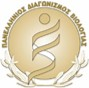

Boston University: Boston, MA May 2021
Student
B.S. in Biology, College of Arts and Sciences.
B.S. in Business Administration, Questrom School of Business- Concentration in Finance.
Cumulative GPA: 3.94.
Boston University Questrom Honors Program May 2021
I attended classes weekly to analyze and gain experience in the business world.
I engaged in though-provoking conversations to improve debating skills.
So far I have provided 40 hours of volunteer work.

Greek National Biology Competition January 2015
A challenging examination that distinguishes high school students with a passion in biology.
I was placed 14th in the country out of 2000 candidates.

Peer Tutoring- Boston University October 2018-Present
Peer Tutor
I helped students with their courses of BI 107, BI 108, CH 101, CH 102, MA 121 to gain a deeper understanding of fundamental concepts in biology, chemistry, and math.
It was my pleasure to assist students with overcoming stress and confusion to perform well on their exams and appreciate and love science, just like me.
Hygeia Hospital-Biology Lab, Athens, Greece July 2016-August 2016
Summer Intern
I served in the central laboratories by examining urine, blood, and stool specimens to diagnose illnesses and prevent future heart attacks.
I also assisted biologists in communication with doctors to receive results in a timely manner.
Regulon Inc., Athens, Greece June 2016
Summer Intern
I studied the process of drug manufacturing to gain experience in advanced/metastatic cancer.
I contributed to maintaining a sterile and clean environment to prevent contamination among the manufacturer’s products.

Boston University Philhellenes, Boston, MA September 2018-Present
Treasurer
I advised the other board members to organize profitable events and allocate the largest number of scholarships.
Moreover, I audited the cash flow of cultural events to distribute money evenly to fifteen scholarships.
Boston University International Peer Mentor, Boston, MA July 2018-Present
Volunteer
I presented to three international students the resources, staff, and colleges of Boston University to simplify their integration to the university.
I initiated the networking of the mentees to assist them in creating their own community.
I answered questions related to the Boston area and student life to eliminate their fears and stress.
Languages:
Native in Greek, Fluent in English and French.
Skills:
PowerPoint, pipette, gel electrophoresis, mass spectrometry.
Interests:
Swimming, biking, running.
If you have time, I recommend listening to this song